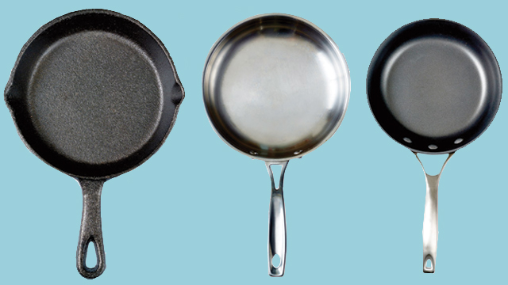
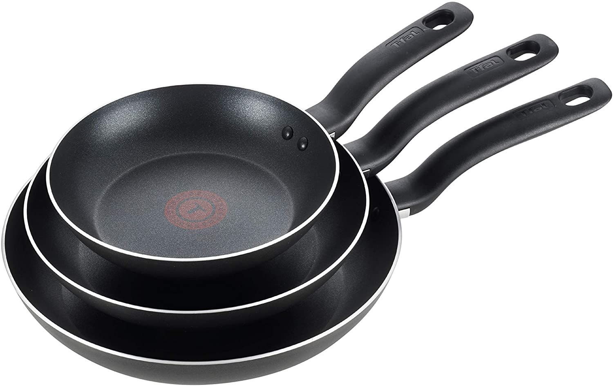
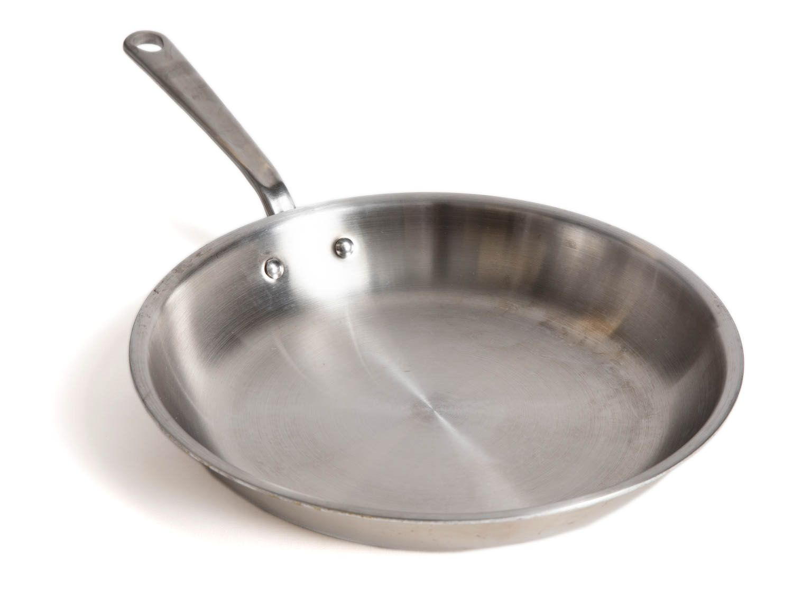
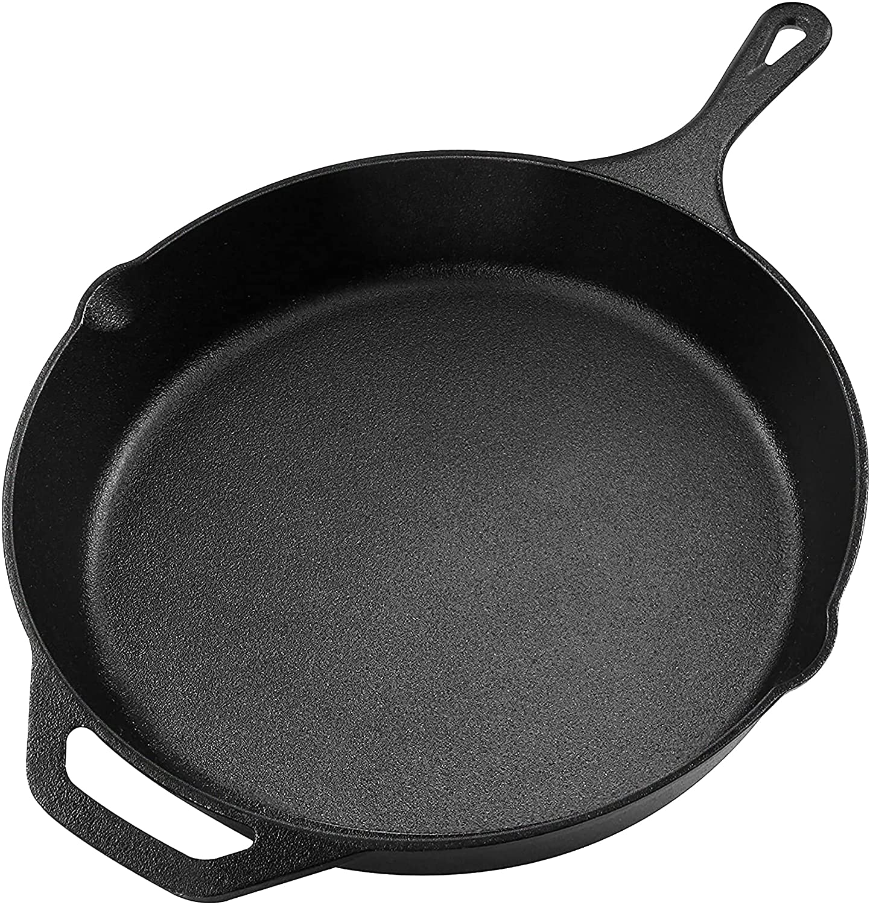

Cookware Materials - Which is best?
When you're out shopping for pots and pans, you might be overwhelmed with all the different types of materials they can be made of, and you might ask yourself: Which one is the best? This article serves to help you make that decision by breaking them down and giving you the pros and cons of each.
Non-Stick

Non-stick pans generally have a dark grey colour and are coated with a synthetic material called Teflon.
Teflon helps create a non-stick, waterproof, and non-corrosive surface, which is ideal for cooking.
These pans are great for delicate foods that may be prone to sticking, such as eggs.
Many people are concerned about risks to their health regarding Teflon. Before 2016, Teflon was being
manufactured with a chemical called perfluorooctanoic acid (PFOA). This chemical poses a risk for health
conditions like kidney and liver disease. However, in 2016, Canada banned the use of PFOA in Teflon
manufacturing, and non-stick pans have since been PFOA-free. It is now generally believed that Teflon is
safe to ingest if it somehow flakes off into the food.
One downside of non-stick pans is that the Teflon coating breaks down at high temperatures (500F or
260C), so it isn't recommended to place these pans inside an oven. The pan generally shouldn't be
reaching these temperatures in regular stove-top cooking though, so it's not too much of a concern so
long as you aren't heating an empty pan without oil. Another downside is that metal utensils and scratch
the Teflon coating, so it is generally advised to use softer materials such as silicon and wood. That
being said, the coating eventually wears down through natural use, so it has a shorter lifespan compared
to other types of pans.
Stainless Steel

Stainless steel pans have light-grey, metallic sheen. They generally aren't coated with any kind of
material, which allows you to use metal utensils in them without worrying about scratching anything off
and into your food. These pans have a thinner profile, which allows them to adapt to changing
temperatures quickly, unlike other pans that retain more heat like cast iron. This allows you to have
more control of the temperature and respond more quickly to situations like your food burning. It is
great for browning/caramelizing ingredients, helping to create a richer flavor. One downside of these
pans is they can be more prone to sticking as they don't have any type of non-stick coating.
One downside of these pans is they can be more prone to sticking as they don't have any type of
non-stick coating.
Cast-Iron

Cast-iron pans have a dark grey colour and are noticeably heavier than other types of pans. The main
benefit of these pans is their ability to retain heat, even after removing the heat source. This makes
them particularly useful for searing things like meat or cooking lots of food at once without losing all
the heat from putting them into the pan.
One of the downsides of cast iron is its weight. The heftiness of the pan makes it hard to toss food by
flicking the pan. Another downside is it can't be used for recipes that require quick changes in
temperature. While the pan is very good for retaining heat, it takes a long time to change the heat of
the pan. This makes it harder to heat up or cool down the pan quickly. Finally, cast-iron pans require
more maintenance than other pans as they need to be seasoned regularly in order to maintain their
natural non-stick coating.
So, which one should I choose?
There is no right answer to this question. It all depends on the kind if food you plan to cook, and the techniques used. All of these materials are great in their own way, and each have their advantages and disadvantages. Overall, you probably should get at least more than one pan type so you can switch it up depending on what you're cooking.